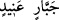

Teâlâ sanki önce bu kabileyi zihinde canlandırıyor. Sonra da ona işaret edip daha fazla
kapalılık meydana getirmek için “ =işte bu” ism-i işâretini getiriyor. Sonra bu
kapalılığı “Rablerinin âyetlerini inkâr ettiler” ifadesiyle açıklıyor. Bu üslûb gayet
güzeldir.
Âyetteki ism-i işâretin Âd kavminin kabirlerine ve bıraktıkları mirasa işâret ediyor
olması da câizdir. O zaman Allah Teâlâ şöyle buyurmuş olur: “Yeryüzünde dolaşın, her
tarafı inceleyin, ibret alın.”
Netice olarak âyetin mânâsı şöyledir: Âd kavmi, Rablerinin âyetlerinin hak olduğunu
bile bile inkâr etmişlerdir. Onların bu inkârı, tıpkı kendisine bir şey emânet edilen
kişinin bunu inkâr etmesi ve bunu inkâr etmekten vazgeçmemesine benzer.
“Ve O’nun peygamberlerine âsî oldular” Âyette peygamber çoğul olarak
kullanılmıştır. Âd kavminin ise bir peygamberi vardır. Bunun sebebi şudur: Onlar kendi
peygamberlerine isyan etmişlerdi. Kendi peygamberine isyan eden, bütün
peygamberlere isyan etmiş olur. Çünkü bütün peygamberlerin tevhid ve dinin
esaslarındaki tebliğleri birbirinden farksızdır.
Denilir ki Âd kavmine Hûd (a.s.)’dan başka peygamber gönderilmemiştir. Âyette
bahsedilen inkâr ve isyan, ileri gelenleri ve alt tabakası ile bu kabilenin bütün ferdleri
için geçerlidir.
“ve ” alt tabakadakiler “inatçı her zorbanın emrine uydular.”
et-Tibyân’da denilir ki: “” kendi içinde büyüklenen ve başkalarına karşı da
büyüklük taslayan demektir. “” ise gerçeği söylemeyen ve kabul etmeyen demektir.
Kâdî  = inatçı zorba ifâdesini şöyle açıklar: “Yani onların büyükleri” Müftî
Sa‘dî ise şöyle der: Kâdî cebbârın büyüklenen mânâsında olduğuna işâret ediyor.
Çünkü cebbâr, kendisinin üzerinde kimsenin hakkı olmadığını düşünen demektir. İnad
kelimesinde de azgınlık mânâsı vardır.
Âyetin mânâsı şöyledir: Ad kavmi, kendilerini îmâna ve onları kurtaracak şeye dâvet
eden zâta karşı gelip kendilerini inkâra ve alçaltacak şeylere çağıranlara itaat ettiler.
60. Onlar hem bu dünyada hem de kıyamet gününde lânete tâbi tutuldular. İyi
bilin ki Âd (kavmi), Rablerini inkâr ettiler. (Şunu da) iyi bilin ki Hûd’un kavmi Âd
Allah’ın rahmetinden uzak olsun.
“Onlar” gerek önderleri gerekse onların peşinden gidenler “hem bu dünyada hem de
kıyamet gününde lânete tâbi tutuldular.” Dünyadaki lânet, Allah’ın rahmetinden ve her
türlü hayırdan uzaklaştırılmak mânâsındadır. Yâni onları azâbı itelemek maksadıyla